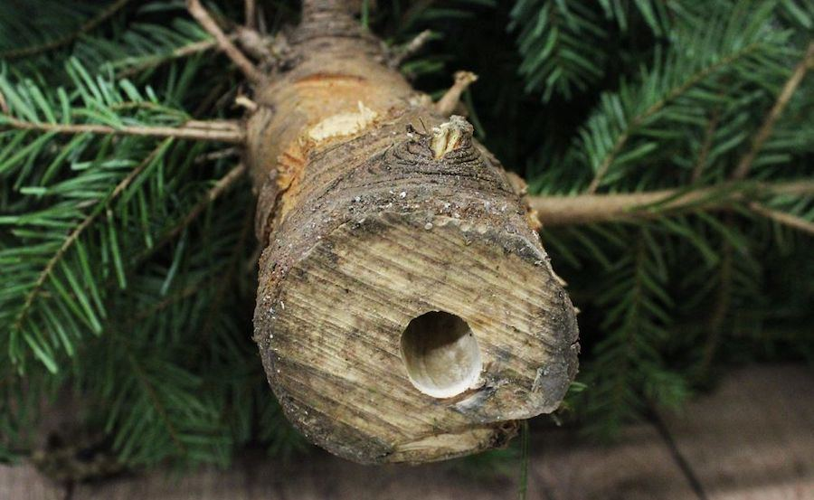
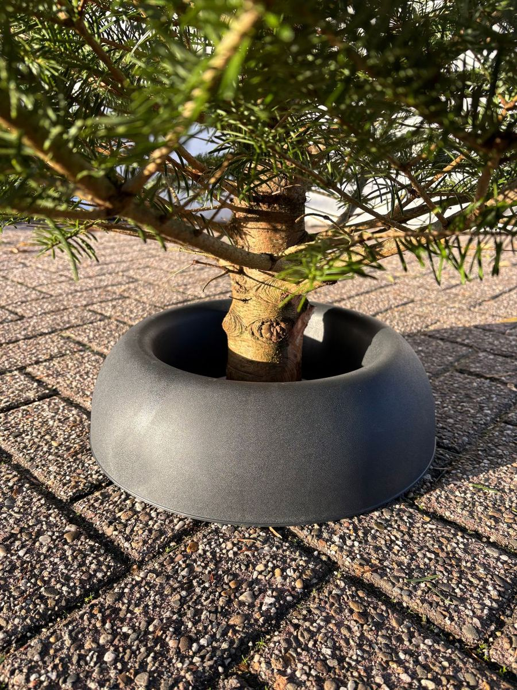
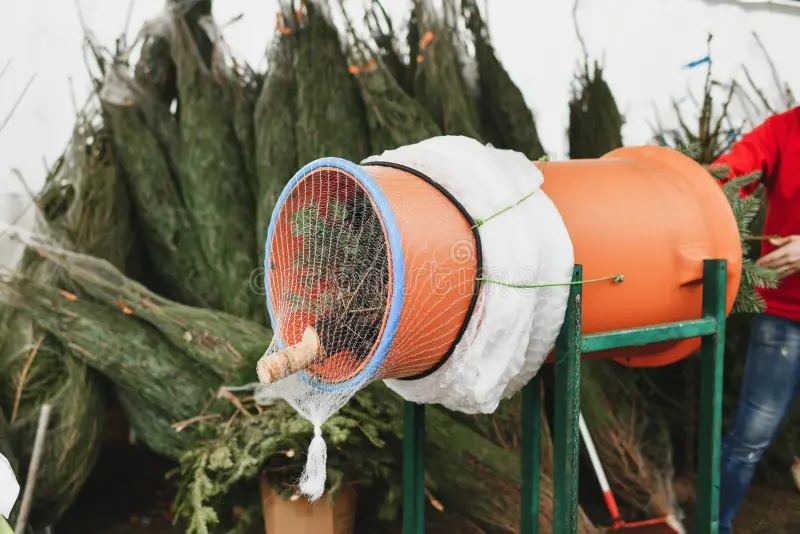

Service & verzorging
Makkelijk mee naar huis, in seconden recht in de standaard en lang mooi tijdens de feestdagen.

EasyFix: in seconden recht
Al onze gezaagde kerstbomen worden standaard voorgeboord voor het EasyFix-systeem. Dankzij deze voorboring plaatst u elke boom binnen enkele seconden recht, stabiel en zonder gedoe.
Geen scheve stammen, geen extra gereedschap en geen tijdverlies. De EasyFix Classic is ook te combineren met onze houten of metalen standaarden. Die zijn los bij ons te koop.
Compact in een net
We pakken onze kerstbomen zorgvuldig in netverpakking in. Zo blijft de boom netjes bij elkaar en past hij eenvoudig in de auto.
Geen naalden door de hele kofferbak en geen brede boom die overal tegenaan stoot. Gewoon snel, schoon en comfortabel naar huis.

Zo blijft uw boom mooi
Al onze kerstbomen groeien buiten en zijn niet gewend aan warme, droge lucht.
Laten wennen
Zet de boom eerst een dagje in de schuur, garage of buiten onder een afdak.
Goede plek
Niet bij verwarming, lampen, tocht of drukke deuren. Droge lucht geeft sneller naaldverlies.
Water geven
Direct een paar liter water, daarna dagelijks 0,5 tot 1 liter.
Juiste pot
Een ruime pot met aarde en een lekbak, zodat overtollig water weg kan.
Boomvoeding
Extra voeding houdt de boom langer fris.
Vragen over uw boom of een standaard?
Stuur ons een WhatsApp of bel even. We helpen u graag.
Vanaf 20 november open
Kom langs om uw boom uit te zoeken, of stuur ons een WhatsApp met uw vraag over maten of meerdere bomen.
Kerstbomen Noordhoek
Op het erf van Mariahof
Openingstijden vanaf 20 november
- Maandag t/m vrijdag
- 09:00 - 20:00
- Zaterdag
- 09:00 - 16:00
- Zondag
- 09:30 - 16:00